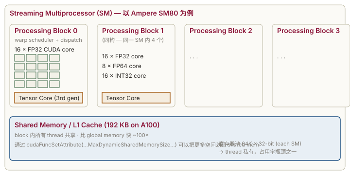

第 4 章 · GPU 硬件架构
学习目标
- 理解 SM 内部结构：CUDA core / Tensor Core / 寄存器堆 / shared mem
- 掌握 SIMT 执行模型与 warp divergence
- 明白什么是 占用率、什么因素决定占用率
- 看完知道 Volta → Ampere → Hopper 在 Tensor Core 上的演进
4.1 SM 解剖图
A100 (Ampere) 上有 108 个 SM，每个 SM 内部长这样：

关键数字（A100 / sm_80）：
| 资源 | 每 SM | 说明 |
|---|---|---|
| FP32 CUDA core | 64 | 每周期吐 64 个 FP32 FMA |
| FP64 CUDA core | 32 | 科学计算用 |
| Tensor Core | 4 (3rd gen) | 主战场：fp16/bf16/tf32/int8 矩阵乘 |
| 寄存器 (32-bit) | 65536 | 所有驻留 thread 平分 |
| Shared mem + L1 | 192 KB | 可配置分割比例 |
| Max threads | 2048 (64 warps) | 同时驻留的上限 |
4.2 SIMT 执行模型
SM 调度的最小单位不是 thread 而是 warp = 32 个 thread。warp 内 32 个 thread同步执行同一条指令但操作不同的数据（寄存器/内存地址）。这就是 SIMT (Single Instruction Multiple Threads)。
graph LR
PC["Program Counter"] --> Decode["Decode"]
Decode -->|"1 cycle"| Disp["Dispatch"]
Disp --> T0(("T0"))
Disp --> T1(("T1"))
Disp --> T2(("T2"))
Disp --> Tn(("... T31"))
style PC fill:#f3f1e8,stroke:#8b1538
style Disp fill:#f3f1e8,stroke:#2f5d3a
SM 同时持有多个 warp（最多 64 个）。每周期硬件挑一个 ready 的 warp 发射指令。 当某个 warp 在等 global memory（几百周期），SM 切到别的 warp 干活——这就是"GPU 用并行隐藏延迟"。
4.3 Warp Divergence — 同 warp 走两条路
如果 warp 内 32 个 thread 走了 if/else 两支：
if (threadIdx.x & 1) { // 偶数 lane 走 else，奇数 lane 走 if
x = x * 2;
} else {
x = x + 1;
}硬件没办法同时执行两条不同的指令，所以它串行跑两遍：先让走 if 的 lane 干活（else 的 lane 掩码屏蔽），再切到 else 的 lane。代价 = 两支的耗时之和。
实测：跑 warp_divergence.cu（T4 典型输出）：
uniform (warp-aligned branch) : 5.412 ms
divergent (lane-aligned branch) : 10.873 ms
slowdown : 2.01x差不多刚好 2 倍——因为两支几乎等长。如果 if 的工作量远大于 else，divergent 损失会更隐蔽（执行时间被 if 主导，不再是简单的 2×）。
threadIdx.x / 32（warp id）对齐，或者干脆用 ?: 让两边都算然后选一个（前提是两边都很便宜）。在 attention mask 这种场景里，常见做法是填 -∞ 而不是 if-skip。
4.4 Occupancy
定义：实际驻留 warp 数 / SM 最大支持 warp 数。高 occupancy 让 SM 有更多 warp 可以切换以隐藏延迟。
占用率受三个资源约束（取最严格的那个）：
- 线程数：block 大小 × block/SM 数 ≤ 2048（A100）
- 寄存器：每 thread 用 N 个寄存器 → SM 上 64K/N 个 thread 上限
- Shared memory：每 block 用 M KB → SM 上 192/M 个 block 上限
运行 occupancy_probe.cu，CUDA Runtime 会替你算：
--- block = 256 ---
light_kernel block= 256 active blocks/SM= 8 warps/SM=64/64 occ=100.0%
heavy_kernel block= 256 active blocks/SM= 4 warps/SM=32/64 occ= 50.0%heavy_kernel 因为本地数组占了很多寄存器（编译器把 float acc[64] 放到了寄存器），SM 上的驻留 block 数被腰斩。
4.5 架构演进 (5 分钟扫盲)
| 架构 | SM | 关键创新 | Tensor Core | 典型卡 |
|---|---|---|---|---|
| Volta | sm_70 | 引入 Tensor Core (fp16 MMA) | 1st gen, 64 FMA/cycle | V100 |
| Turing | sm_75 | 消费级 TC，加 int8/int4 | 2nd gen | T4 / RTX 20 |
| Ampere | sm_80/86 | tf32, bf16, async copy (cp.async), 稀疏 | 3rd gen, 256 FMA/cycle | A100, RTX 30 |
| Ada | sm_89 | FP8 (E4M3/E5M2), SER | 4th gen | L40, RTX 40 |
| Hopper | sm_90 | TMA (硬件张量加载), DPX, async warpgroup MMA, 分布式共享内存 | 4th gen | H100 |
| Blackwell | sm_100 | FP4, 第二代 Transformer Engine | 5th gen | B100/B200 |
对 LLM 推理重要程度（粗略）：
- Tensor Core（Volta 起）→ GEMM 加速 8×+
- bf16（Ampere）→ 训练 / 推理动态范围大
cp.async（Ampere）→ 让 shared memory 加载与计算重叠，FlashAttention 的基础- FP8（Hopper/Ada）→ 推理吞吐再翻倍
- TMA（Hopper）→ kernel 不再手写 load 循环，硬件批量搬运 tile
4.6 工业实战：MIG、ECC、功耗管理
把 GPU 上线到生产，光会写 kernel 不够，还要会调"GPU 设置"。这一节是数据中心运维必备。
4.6.1 MIG (Multi-Instance GPU) — 一卡当七卡用
A100 / H100 / H200 支持把一张 GPU 切成最多 7 个独立的"小 GPU"（叫 MIG instance），每个有独立 SM、独立显存、独立 cache。用途：多租户推理服务，让小模型共享大卡。
# 1) 启用 MIG 模式 (需要 root + 没人在用 GPU)
sudo nvidia-smi -mig 1
# 2) 创建 MIG instances (A100-40G 可切 1g.5gb × 7)
sudo nvidia-smi mig -cgi 19,19,19,19,19,19,19 -C
# ^^^ profile id, 19 = 1g.5gb
# 3) 看现在的切片
nvidia-smi -L
# GPU 0: NVIDIA A100-SXM4-40GB
# MIG 1g.5gb Device 0: (UUID: MIG-...)
# MIG 1g.5gb Device 1: (UUID: MIG-...)
# ...
# 4) 关 MIG 模式
sudo nvidia-smi -mig 0| profile | SM 比例 | 显存 | 典型用途 |
|---|---|---|---|
| 1g.5gb | 1/7 ≈ 14% | 5 GB | BERT-base, 小推理 |
| 2g.10gb | 2/7 ≈ 28% | 10 GB | 7B fp16 推理 |
| 3g.20gb | 3/7 ≈ 42% | 20 GB | 13B fp16 |
| 7g.40gb | 1 (全卡) | 40 GB | 整卡训练 |
陷阱：MIG 开启后，cudaGetDeviceCount 返回的是 MIG instance 数而不是物理 GPU 数；代码看到的算力是切片大小，跟物理 GPU 不一样。新手调试半天找不到原因，记得 nvidia-smi -L 看现在到底切了没。
4.6.2 ECC — 单 bit 翻转保护
数据中心 GPU 默认开 ECC（错误检测与纠正）。它给每 64 bit 数据加 8 bit 校验，能纠 1 bit 错误、检测 2 bit 错误。代价：
- 显存少 ~6%（A100-80G 实际可用 ~76 GB）
- HBM 带宽降 ~5%（要传校验位）
- 极小幅算力影响（< 2%）
nvidia-smi -e 0 # 关 ECC (需重启 GPU)
nvidia-smi -e 1 # 开
nvidia-smi -q -d ECC # 查累计错误数
# 关注:
# Volatile Single Bit ECC Errors (本次启动后)
# Aggregate Single Bit ECC Errors (从出厂)是否关 ECC：
- 训练：必开。一次 bit 翻转可能让 loss NaN 浪费几小时。
- 推理：可关。bit 翻转影响一个 token 不致命。生产推理服务 80% 都关，多 ~5GB 显存。
- 看到 Volatile Single Bit Errors > 0：观察增长率，> 100/天 该送修。
4.6.3 功耗与时钟管理
GPU 默认动态调频：温度高就降频、负载低就降频。生产服务希望延迟稳定，常用做法是锁定时钟：
# 查支持的时钟
nvidia-smi -q -d SUPPORTED_CLOCKS | head -40
# 锁定 GPU 时钟到 1410 MHz, mem 1215 MHz (A100 典型最大)
sudo nvidia-smi -ac 1215,1410
# 锁定功耗墙到 300W (默认 400W, 省电用)
sudo nvidia-smi -pl 300
# 解锁
sudo nvidia-smi -rac
sudo nvidia-smi -rgc锁频后 benchmark 数字更稳定（消除 thermal throttling 的抖动），适合 CI 性能回归测试。
4.6.4 nvidia-smi 读图：理解每列
+---------------------------------------------------------------------------------------+
| NVIDIA-SMI 535.86.05 Driver Version: 535.86.05 CUDA Version: 12.2 | ← 驱动 + 驱动支持的最高 CUDA
|-----------------------------------------+----------------------+----------------------+
| GPU Name Persistence-M | Bus-Id Disp.A | Volatile Uncorr. ECC |
| Fan Temp Perf Pwr:Usage/Cap | Memory-Usage | GPU-Util Compute M. |
| | | MIG M. |
|=========================================+======================+======================|
| 0 NVIDIA A100-SXM... On | 00000000:00:04.0 Off | 0 |
| N/A 42C P0 72W / 400W | 1234MiB / 81920MiB | 45% Default |
| | | Disabled |
+-----------------------------------------+----------------------+----------------------+
要关注的字段:
- Persistence-M = On 省每次 cuInit 的 ~3 秒延迟 (生产服务必开: sudo nvidia-smi -pm 1)
- Pwr 72W/400W 功耗远低于 cap → mem-bound 或 launch 等
- 1234MiB/81920MiB 显存占用 (有时是其他进程, nvidia-smi 看不到 driver 占用)
- GPU-Util 45% 注意陷阱: 100% 不代表算力跑满
- MIG M. Disabled MIG 未开看进程占了多少：
nvidia-smi pmon -i 0 -d 1 # 每秒打印每进程的 sm/mem/enc/dec util
nvidia-smi --query-compute-apps=pid,used_memory --format=csv4.6.5 各代 GPU 在 LLM 工业部署中的定位
| 架构 | 代表卡 | 对 LLM 关键能力 | 2025 现状 |
|---|---|---|---|
| Volta sm_70 | V100 | 第一代 TC, 只有 fp16 | 已淘汰, 偶见 EC2 老机型 |
| Turing sm_75 | T4 / RTX 20 | TC + int8, 16 GB | Colab 免费 / 边缘推理 |
| Ampere sm_80 | A100 | cp.async / bf16 / tf32, 40-80 GB | 训练 / 推理主力, 性价比之王 |
| Ampere sm_86 | A10 / RTX 30 | fp16 TC 大幅强化 | 推理中端 |
| Ada sm_89 | L40S / RTX 4090 | FP8 + 更多 fp16 算力 | 消费推理 / 边缘 |
| Hopper sm_90 | H100 / H200 | TMA / wgmma / DPX / Transformer Engine | 训练顶配, 长 context 推理 |
| Blackwell sm_100 | B100 / B200 / GB200 | FP4 / TC 第 5 代 | 2025 起最新 |
对 LLM 推理来说最大的几次跳跃：
- Volta → Turing：消费端有了 TC，inference 落地变现实
- Turing → Ampere：cp.async 让 FlashAttention 成为可能
- Ampere → Hopper：TMA + Transformer Engine + fp8 让 100B+ 模型可服务
- Hopper → Blackwell：fp4 让超大模型推理成本再降 2-3×
选 GPU 的时候，对应到你的模型规模和 latency 要求查上表。
4.7 研究前沿（2025-2026）：Blackwell 解剖
4.7.1 Blackwell B200 关键特性
Blackwell（sm_100）是 Hopper 之后的下一代，2024 末发布，2025 大规模量产。结构变化比 Ampere→Hopper 更激进：
| 特性 | Hopper (H100) | Blackwell (B200) | 变化 |
|---|---|---|---|
| 制程 | TSMC 4N | TSMC 4NP, dual-die | 双 die 通过 NV-HBI 10 TB/s 互联 |
| 晶体管 | 80B | 208B（2 die 各 104B） | 2.6× |
| SM 数 | 132 | 148 (× 2 die = 296) | 2.2× 总数 |
| HBM | 80 GB HBM3 | 192 GB HBM3e | 容量 2.4×, 带宽 1.7× |
| HBM 带宽 | 3.4 TB/s | 8 TB/s | 对 LLM decode 是巨大利好 |
| fp16 TC 算力 | 989 TF | 2250 TF | 2.3× |
| fp8 TC 算力 | 1979 TF | 4500 TF | 2.3× |
| fp4 TC 算力 | 无 | 9000 TF (=10 PF) | 新增 |
| Tensor Memory (TMEM) | 无 | 每 SM 256 KB | 新增（关键创新） |
| 2nd-gen Transformer Engine | — | 有 | FP6 / FP4 / 动态精度 |
| NVLink | NVLink 4, 900 GB/s | NVLink 5, 1800 GB/s | 2× 跨卡带宽 |
4.7.2 Tensor Memory (TMEM) — Blackwell 最大改动
Hopper 及之前所有 GPU 用一个统一的 register file 存 fragment / accumulator。Blackwell 把matrix accumulator 抽出来到一块独立的 SRAM（叫 TMEM）：
SM 内部 (Blackwell):
┌─ Register file ~64 K × 32-bit (跟 Hopper 一样)
├─ Shared / L1 ~228 KB (跟 Hopper 一样)
├─ Tensor Memory (TMEM) 256 KB ← 新增, 专给 MMA accumulator
└─ Tensor Cores (5th gen) + Transformer Engine 2
动机：fp4 / fp8 MMA 的 accumulator 是 fp32，每个 MMA 要消耗几十个寄存器持有 acc。把 acc 放 TMEM 释放了寄存器给其他用途，让 ILP 大幅提升。
用 TMEM 的新指令: TCGEN05
// PTX-level (CUTLASS 3.5+ 自动用)
tcgen05.mma.async // 异步 MMA, accumulator 写 TMEM
tcgen05.ld // 从 TMEM 读出 accumulator
tcgen05.cp // shared memory ↔ TMEM典型代码量： CUTLASS 已经全部封装，普通 kernel 开发者不用碰 PTX。但FlashAttention v4 / DeepSeek FlashMLA 等都直接用 TCGEN05 拿到 95%+ peak。
4.7.3 2nd-gen Transformer Engine：动态精度
Hopper 的 1st-gen TE 只能在 fp16 / fp8 之间切。Blackwell 的 2nd-gen 可以：
- 每个张量自动选 fp4 / fp6 / fp8 基于范围分析
- 支持 microscaling (block size 16/32) — 每 16/32 元素一个 scale，比 per-tensor scale 精度高
- 训练 / 推理都能用，DeepSeek-V3 部分用 fp8 训练就是同思路（虽然 V3 用的还是 Hopper）
4.7.4 GB200 与 NVL72：rack 即 GPU
单 B200 已经很强，但 NVIDIA 的真正杀手锏是 NVL72：
1 个 GB200 = 1 Grace CPU + 2 Blackwell die (= 1 B200)
1 NVL72 rack = 36 GB200 = 72 Blackwell die (称为"72 GPU"，但实际 36 物理 GPU 包)
NVL72 内部: NVSwitch 5 全互联，每 GPU 1800 GB/s
对外: 1.4 EF fp4 算力, 13.8 TB HBM, 30 TB CPU LPDDR5X能干什么：
- 1.8T 参数 fp4 模型一柜推理（之前需要跨节点）
- Llama 4 Behemoth 2T 训练，跨 rack 通信压力小
- DeepSeek-V3 671B MoE TP=16 + EP=72，单柜服务
4.7.5 Rubin（2026 中后期）— 下一代
NVIDIA 已公布 Rubin 路线图：
- Rubin (R100, 2026)：3nm，HBM4，再一轮 ~2× 算力
- Rubin Ultra (R200, 2027)：4 die / GPU, ~8 PF fp4
- NVL576 整柜：训练顶级模型
核心趋势：单卡再难有 2× 跳跃，整柜带宽与 cluster 调度是新战场。
4.7.6 AMD / Google TPU 现状（2026）
| 方案 | 对应 NVIDIA | 差距 | 优势 |
|---|---|---|---|
| AMD MI325X (CDNA 3.5) | ~H200 | fp8 算力略低 | 256 GB HBM3e — 显存王 |
| AMD MI350 (CDNA 4, 2025) | ~B200 | fp4 支持 | 开源 ROCm 生态长期投资 |
| Google TPU v6 Trillium | ~H200 (BF16) | fp4 弱 | 整 pod 训练效率高 |
| Google TPU v7 (2025-26) | ~B200 | 仅 GCP | Gemini 系列自用 |
| Cerebras WSE-3 | 晶圆级单卡 | 不同范式 | 900K core, 训练大模型快 |
| Groq LPU | 专攻推理 | 训练弱 | 700+ tokens/s/user — 最快推理 |
| SambaNova SN40L | 专攻 MoE 推理 | — | 大 SRAM, 适合 1T+ MoE |
2026 工业现实：训练市场 NVIDIA 仍 90%+ 占有，推理市场被 Groq / Cerebras / TPU / AMD 切走 20-30%。但 CUDA 仍是研发 + 算法创新的起点——任何新算法都先在 NVIDIA 上验证。
4.8 自检
Q1: 一个 SM 同时能跑多少 thread？多少 warp？
A100 上 2048 thread = 64 warp（同时驻留）；同时执行的只有 4 个 warp（因为有 4 个 processing block，每周期挑 4 个 warp 发射）。
Q2: 我的 block 用了 32 thread，能跑满 GPU 吗？
不能。32 thread = 1 warp，但 SM 想要 8-16 个 warp 才能隐藏延迟。block 太小 → 单 SM 上 warp 太少 → occupancy 上不去。
Q3: FP32 算力高还是 FP16 算力高？差多少？
A100：FP32 19.5 TFLOPS（用 CUDA core），FP16+TC 312 TFLOPS（用 Tensor Core）。差 16 倍。所以 LLM 推理用 fp16/bf16/fp8。
Q4: cooperative_groups 是什么？
CUDA 9+ 引入的"任意粒度同步"API。可以细到 warp 内 8 thread 同步、粗到 grid 内所有 block 同步（grid sync 需要 sm_60+ 且专用 launch API）。第 7 章会用到 warp-level reduce。
Q5: 寄存器溢出 (register spill) 是什么？
当编译器发现一个 thread 用的寄存器超过硬件上限（A100 上 thread 最多 255 寄存器），多出的 "本地变量" 会被放到 local memory——其实是 global memory 的私有分区，奇慢。Nsight 报告里看 "Stack Spills" 行。
4.9 练习
- 跑
warp_divergence.cu，改iters看耗时如何线性变化。 - 给
occupancy_probe.cu加一个shared_kernel，用__shared__ float buf[16384]（= 64 KB），看 SM 上能驻留几个 block。 - 查阅你 GPU 的 Compute Capability 表，记下：每 SM 最大寄存器、shared mem、warp 数。
下一步
第 5 章是性能优化的真正起点：内存层级与合并访问。理解了内存才能理解为什么写 kernel 95% 的力气花在"减少访存"上。